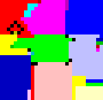

Introdução
Embora este curso assuma que você já saiba programar em alguma linguagem, ou exatamente por isso, é importante que façamos uma revisão de algumas ideias básicas de programação antes de mergulharmos no paradigma funcional, para que possamos melhor posicionar este paradigma com em relação aos demais.
Paradigmas de Programação
Programar um computador consiste em comunicar ao computador instruções para que ele resolva problemas. E a comunicação entre duas entidades só é possível se usarem uma linguagem em comum, isto é, dominada pelas duas partes.
Comunicação
Ação ou efeito de comunicar, de transmitir ou de receber ideias, conhecimento, mensagens etc., buscando compartilhar informações.1
Quando humanos se comunicam, usam uma linguagens naturais, como o português, libras, ou cantonês. Linguagens naturais são altamente expressivas, cheias de nuances e dependências do contexto, o que lhes confere grande poder, mas também a grande fraqueza de permitirem a construção de mensagens ambíguas. A comunicação entre computadores ou computares e humanos, contudo, precisa ser feita de forma precisa, e por isso linguagens naturais não são boas neste contexto, apesar do grande esforço dispendido e da evolução do processamento de linguagens naturais, como as alexas e siris do mundo podem provar.
A comunicação entre computadores é feita por um protocolo de comunicação, assunto para outro curso. Já a comunicação entre humanos e computadores, na programação do computador, é feita por meio de linguagens de programação, que são muito mais restritas que as linguagens naturais e, por isso, não ambíguas.
Linguagem de Programação
A linguagem de programação é um método padronizado, formado por um conjunto de regras sintáticas e semânticas, de implementação de um código fonte - que pode ser compilado e transformado em um programa de computador, ou usado como script interpretado - que informará instruções de processamento ao computador.2
A não ambiguidade das linguagens de programação do fato de terem uma sintaxe e semânticas precisas, descritas por uma gramática também precisa.
Sintaxe
A sintaxe de uma linguagem descreve o que constitui um programa estruturalmente correto e é definida por uma gramática.
Semântica
O significado de um programa é definido por sua semântica, ou seja, por regras que definem como as instruções especificado devem ser interpretadas.
Serem precisas não quer dizer que as linguagens sejam simples, como demonstra claramente a seguinte imagem, que é um programa é um "hello world" na linguagem Piet.

Também não quer dizer que sejam limitadas. De fato, há milhares linguagens de programação por aí, e contando, com diferentes características que as tornam mais mais ou menos apropriadas para resolver diferentes problemas.

Mas mesmo apesar de tão grande número, as linguagens podem ser classificadas em grandes famílias ou paradigmas.
Imperativo x Descritivo
Os primeiros "computadores" eram máquinas que computavam mecanicamente seus resultados. Uma segunda geração, da qual destacamos o ENIAC (circa 1955), eram computadores sem parte mecânicas, programados por conexões elétricas de suas diversas partes. O próximo passo, foram computadores que interpretavam código escrito em uma linguagem de programação.
Estas primeiras linguagens eram todas imperativas, no sentido de que ditavam ao computador uma sequência de instruções a serem seguidas para se chegar a um resultado. Isto é, estas linguagens permitiam ao programador dizer como realizar uma computação.
Imperativo
- leia a linha 1 do arquivo
- separe a linha por espaços
- pegue a segunda parte da linha
- converta a parte para número
- se o número for maior que 15, escreva na tela
- leia a próxima linha do arquivo
- volte para o passo 2
Este paradigma tem suas raízes no modelo computacional clássico de von Neumann e na máquina de Turing

Em contrapartida a este modelo, surgiram mais tarde linguagens declarativas, em que o programado diz o quê deve ser computado e o computador se encarrega de achar um "como".
Descritivo
- selecione todas as linhas em que a segunda parte é maior que 15
Com uma análise rápida das linguagens mais conhecidas, voce deve reconhecer a maior parte como imperativas, por exemplo, C, Java, e Python. Já dentre as linguagens declarativas, se destacam SQL, LINQ, e Prolog.
Ortogonalmente ao foco em no "como x o quê", podemos nos focar em como as estas instruções são organizadas mais em um nível mais alto, de onde se destacam quatro paradigmas principais: procedimental, orientado a objetos, lógico e funcional.3
Procedimental
Linguagens que usam o paradigma procedimental organizam instruções em blocos, denominados procedimentos, de onde vem o nome, ou funções. A ideia é que o código seja modularizado para separar funcionalidades e tornar o código mais compreensível e manutenível. Cada função deve executar uma operação bem específica, funções associadas são colocadas em um mesmo arquivo, e arquivos associados são colocados em um mesmo namespace.
O código seguinte, em C, mostra a função main, ponto de entrada do programa e de onde a função printf, importada de stdio.h, é invocada.
1 2 3 4 5 | |
Além da linguagem C, outros exemplos óbvios deste paradigma são as linguagens Pascal, Fortran e Python. Contudo, mesmo linguagens como Java e C++ podem ser consideradas procedurais, uma vez que organizam a computação em métodos, que são nada mais que funções. Mas como métodos estão fortemente associados a classes e suas instâncias, os objetos, estas linguagens são melhor classificadas como orientadas a objetos.
Orientado a Objetos
Na orientação a objetos, o foco está não na execução passo a passo de funções, mas na organização de dados e funções associadas em objetos. Embora esta organização possa ser feita em qualquer qualquer linguagem estruturada, a sintaxe das linguagens orientadas a objeto facilita e tornam mais natural este trabalho.
Dois conceitos básicos na orientação a objetos são as classes e os objetos. Classes são abstrações de tipos de coisas encontrados no mundo real, ou seja, receitas de estruturas de dados e definem quais os dados devem ser considerados em conjunto para representar um objeto e quais as ações associadas a este objeto. Por exemplo, se no mundo real cachorros tem uma data de nascimento e um nome, e são capazes de latir, uma classe que represente cachorros pode ser definida assim em Java.
1 2 3 4 5 6 7 8 9 10 11 | |
Já um objeto é uma instância de uma classe, uma representação de um tipo mas de uma coisa em si. Um cão qualquer poderia ser representado assim
1 2 | |
e a execução deste código resultaria em
1 2 3 | |
Observe que o "." em cachorro1.latir(3) quer dizer "executar a função latir no objeto cachorro1", o que leva à string Napoleão a aparecer antes de cada latido.
Duas coisas poder ser ditas sobre este ".". Primeiro, que ele não é necessário, o objeto em si poderia ser passado como parâmetro para uma função latir que recebesse o objeto além da quantidade de latidos; de fato, em Python, a classe seria definida como a seguir
1 2 3 4 5 6 7 8 9 | |
o que implica que o "." é o só açúcar sintático para a execução de uma função, o que nos leva ao segundo ponto. Na orientação a objetos conceitual, não se fala em invocação de funções mas de sinais sendo transmitidos entre objetos: envie mensagem para o 2 "somar-se com 3", ao que o objeto 2 responderia com uma mensagem "referência ao objeto 4". Em Smalltalk, esta interação seria escrita assim:
1 | |
Grande parte do poder da orientação objetos está no encapsulamento do como operações são executadas, nos métodos. Uma outra ordem de encapsulamento, de outro tipo, é encontrada no paradigma lógico.
Lógico
No paradigma lógico, você declara-se fatos básicos e regras sobre como os fatos se relacionam e pergunta ao programa se certos fatos são ou não são verdade. Por exemplo, como fatos, podemos declarar
1 2 3 4 5 | |
que vale a transitividade
1 2 3 | |
e, finalmente, perguntar se elefante é maior rato
1 | |
ao que seremos respondidos com um "sim". Você consegue imaginar quantas linhas de código você precisaria para expressar a mesma lógica acima em uma linguagem como C ou Java? Apesar do claro poder deste paradigma, o mesmo tem poucos representantes, como Prolog e Mercury, e mesmo que exista vários compiladores do primeiro, o uso comercial do paradigma é bem limitado.
Funcional
A programação, como indicado pelo nome, é focada na organização do processamento em termos de funções, mas de uma forma diferente da programação procedimental. De forma geral, funções são blocos de código criadas essencialmente para se obter reusabilidade: uma vez definidas, as funções podem ser invocadas repetidas vezes para executar a mesma tarefa sobre diferentes parâmetros, sempre retornando um resultado.4 Mas enquanto na programação procedimental a invocação de uma função pode retornar diferentes resultados mesmo quando os parâmetros são os mesmos, na programação funcional, funções são como na matemática, isto é, mapeiam uma entrada para uma saída, sempre. Não é a toa que outro nome usado para definir os blocos de código é procedimento em vez de função.
Vejamos alguns exemplos.
As funções seguintes, definidas em Erlang, calculam A+B, A*C e (A+B)*(A+B); independentemente de quantas vezes você o fizer, add(2,3) sempre retornará 5.
1 2 3 4 5 6 7 8 | |
Agora observe a função seguinte, escritas em Python; a cada invocação, a variável acc tem seu valor alterado e mesmo que invocada com a mesma entrada, o resultado da função é sempre diferente.
Os efeitos externos à função, e.g., a alteração da variável acc, é conhecido efeito colateral.
Programação funcional não tem tem efeitos colaterais por que trata variáveis não como áreas de memória alteráveis, mas como incógnitas, como na matemática. Pelo menos esta é a ideia de programação funcional pura, que é essencialmente a escrita de longuíssimas equações.
Acontece que devido à complexidade inerente do uso de programação funcional pura, sem efeitos colaterais, i.e., sem mutação de estados, muitas linguagens não são puramente funcionais.
A razão mais comum para efeitos colaterais é a realização de Entrada/Saída. Por exemplo, ao invocar print no Python, o terminal tem seu estado alterado, e cada nova invocação altera mais o estado.
Assim, podemos dividir as linguagens e funcionais puras, funcionais não puras e não funcionais, mas mesmo dentro das não funcionais, há aquelas com elementos de programação funcional.
"Funcionalidades"
Muitas linguagens modernas, como Python e JavaScript, embora não estritamente funcionais, tem diversos elementos de programação funcional, eu diretamente na linguagem ou via frameworks.
Python, por exemplo, várias funcionalidades características do paradigma funcional, embora seja possível ignorá-las por completo.
Por exemplo, imagine que você queira criar uma lista com o quadrado de todos os números de 1 a x.
Você pode optar por um for clássico ...
1 2 3 4 5 | |
... ou uma compreensão de listas, como nos exemplos a seguir.
1 2 | |
Além disso, há linguagens funcionais que também se enquadram em outros paradigmas e que podem ser consideradas híbridas, ou multi-paradigma.
Multi-paradigmas
Muitas linguagens modernas podem ser classificadas ao mesmo tempo em muitos paradigmas, por exemplo, a linguagem Scala é ao mesmo tempo funcional e orientada a objetos, sendo muito difícil usá-la sem fazer uso desta característica.
1 2 3 4 5 | |
Para cada serviço, uma ferramenta!
Em cada paradigma, encontramos vantagens e desvantagens. Como desenvolvedores de tecnologia, nada mais justo que vocês conheçam todos os paradigmas e que possam, assim, escolher aquele paradigma e, dentro dele, aquela linguagem que permite resolver o seu problema da forma mais eficiente, isto é, rapidamente, com menor custo e com melhor qualidade.
Mas quanto ao paradigma funciona, em especial, é importante compreendê-lo pois muitas de suas funcionalidades tem sido incorporadas a outras linguagens, como compreensão de listas em Python, funções lambda em Java e C++, e processamento assíncrono pode ser visto como uma forma de avaliação preguiçosa em diversas linguagens.
Vejamos estes outras pontos importantes do paradigma:
-
Sem efeitos colaterais: executando um programa, de repente você percebe que uma certa variável tem um valor estranho e fica se perguntando quem foi que atribuiu tal valor; efeitos colaterais são a origem de boa parte dos bugs e eliminá-los, ou ao menos reduzí-los, permite que você identifique rapidamente onde alterações poderiam ter acontecido.
-
Camadas de abstração: funções podem ser compostas levando a programas verdadeiramente complexos, permitindo que abstrações sejam definidas em diversas camadas. Além disso, é possível, em teoria, ser provar a corretude de funções e, mesmo que na prática isso não se realize, há ferramentas que conseguem usar esta ideia para lhe ajudar a encontrar bugs.
-
Processamento paralelo eficiente: a ausência de efeitos colaterais também implica que funções sem dependências podem ser executadas em paralelo, sem se preocupar com qualquer sincronização, isto é, sem mutexes e variáveis de condição, etc.
-
Avaliação preguiçosa: funções só precisam realmente ser executadas se seus resultados são necessários e o compilador consegue atrasar a execução de funções enquanto possível.
-
Recursão de calda: alguns problemas podem ser descritos muito facilmente como uma recursão que com uma iteração, mas linguagens tradicionais tem um limite no tamanho das pilhas de função; linguagens funcionais conseguem, em certas condições, usar recursão infinita, contornando esta limitação.
-
Funções de alta ordem:
Todo
Encapsulamento, herança, polimorfismo
Escolha o seu veneno
Como já ficou óbvio, há muitas, muitas linguagens de programação por aí. Dentre estas, há diversas opções de linguagens que podemos usar para estudar o paradigma funcional, por exemplo:
- Scheme
- Lisp
- ML
- F#
- Erlang
- Elixir
- Haskell
Neste curso, veremos princípios gerais e que, em teoria, poderiam ser aplicados em qualquer destas linguagens. Contudo, como a sintaxe pode variar muito de uma linguagem para outra, precisaremos nos focar em uma única linguagem, mesmo que, frequentemente, apresente exemplos em múltiplas linguagens. Assim, nosso foco aqui será em Haskell, uma linguagem funcional madura e estável.
-
voidé simplesmente um resultado que diz que o resultado não importa. ↩